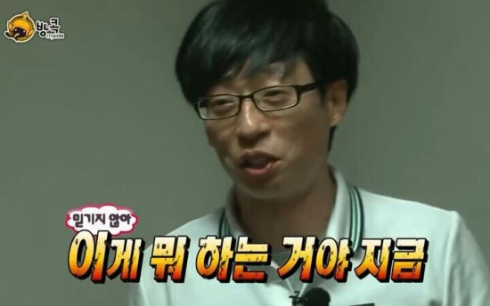

행복했(었)다.
2019년 12월 21일, 친구와 단둘이 떠난 3주간의 첫 유럽여행.
대망의 첫 여행지 런던에서의 일주일은 이래도 되나 싶을 정도로 행복한 일들뿐이었다.
“이게 유럽이구나!”
런던에서 느낀 유럽의 첫인상은 모든게 완벽했다.
음식, 여행지, 날씨, 교통.. 그 외 모든게 우릴 위해 존재하는 듯 하나같이 만족스러웠다.
그리고 하이라이트, 런던에서 맞는 크리스마스!

런던에서 최고의 크리스마스까지 보낸 우리는 앞으로도 분명 행복한 일만 가득할 거라고 굳게 믿고, 다음 여행지 프랑스 파리로 떠났다.
굳게 믿고......
첫날부터 우리를 맞이한 건 그 유명한 교통파업
하필 파업기간 중 여행을 하게 된 우리가 파리에 있는 6일 동안 본 지하철역은 거의 다 굳게 닫힌 철창으로 막혀있었고 아예 접근조차 할 수 없었다. 일부러 지하철역 바로 앞에 있는 호텔을 예약했던 우리는 결국 매일매일 호텔에서 걸어서 30분 거리에 있는 (그나마 운행되는 열차가 몇 개 있는 큰 역인) 파리 북역으로 걸어가야 했다.
6일동안, 매일매일, 왕복 1시간 걷기라니...

(이렇게 파리의 거리를 걷다 보면 노상 방뇨를 하는 사람들을 적지 않게 마주칠 수 있다. 덕분에 지린내와 함께 하는 걷기 운동 가능...)
TIP1. 교통파업이 빈번한 파리, 숙소는 파리 북역과 가까운 곳으로!
기다리고 기다리던 디즈니랜드!
였는데...
6개월 전의 우리는 파리가 교통파업을 하게 될 거라고는 생각도 하지 못했고, 더 저렴한 방법인 대중교통을 이용하기로 하며 셔틀버스가 포함되지 않은 옵션의 디즈니랜드&디즈니 스튜디오 티켓을 구입했다. 결국 교통파업을 맞닥뜨린 우리는 간절히 구글 지도에 검색해보며 방법을 찾았지만 디즈니랜드로 향하는 열차는 정말 단 하나도 없었다. 마지막 희망이었던 우버도 알아봤지만 당장 우리를 디즈니랜드로 데려다줄 우버는 전부 200유로 이상...을 요구했다.

200유로..? 티켓이 8만원인데 가는데만 28만원이라니..
심지어 호텔로 돌아올 때는 우리를 태워다 줄 우버 차량이 있을지 없을지도 모르는 상황에서 우리는 어쩔 수 없이 디즈니랜드와 8만원을 포기했다.
TIP2. 디즈니랜드 티켓 구입 시 왕복 셔틀버스까지 함께 예약하기!
무임승차의 성지
파리 북역은 유로스타도 운행되는 큰 역이기 때문에 그나마 몇몇 개의 열차들이 다니고 있었다. 북역에서 열차를 타기 위해 티켓 까르네를 구입하고 파리에서의 첫 지하철을 타보기로 했다. 그렇게 우리는 개찰구로 향했고 정말 많은 사람들이.. 무임승차를 하고 있었다... 티켓을 구입한 우리는 개찰구에 까르네를 넣고 여유롭게 통과하려고 했는데
.......?????????
그 순간, 내 뒤로 모르는 외국인이 달려 들어와 나와 함께(...?) 개찰구를 통과했다. 나는 너무 놀라고 당황했는데 이렇게 아무 눈치 안 보고 당당하게 무임승차 하는 사람들이 정말 많았다.
TIP3. 많은 현지인들이 무임승차를 하지만, 검수원이 불시에 나타나 벌금을 물게 하는 경우도 있으니 정당하게 티켓 구입하고 타기!
우리 인터라켄 가게 해줘요 제발..
불길한 예감은 절대 틀리지 않는다더니.. 파리에서 인터라켄으로 가기 위해 미리 예약해놓은 TGV열차가 파업으로 인해 취소되었다는 사실을 알게 된 우리는 바로 해당 역으로 티켓을 교환 받으러 갔다. 우리와 같은 이유로 교환을 받았다는 블로거의 글을 보고 간 그곳에서 한 직원이 우리에게 교환해줄 수 없다는 말과 함께 새로운 티켓을 구입해야 한다는 소식을 전했다.
예.........???????????????
(미리 구매한 티켓만 해도 15만원이었는데, 환불도 안되고 지금 20만원이 넘는 티켓을 다시 구입하라는 말을 이렇게 아무렇지도 않게 한다고..?)
말도 안되는 상황에 우리는 다른 직원에게 같은 문의를 했고 그 직원의 안내에 따라 우리는 성공적으로 티켓을 교환받을 수 있었다. 열차가 취소된 사실을 일찍 알아내서 다행히 남아있는 다른 열차로 교환 받긴 했지만 아직도 그 직원의 행동은 너무 화가 나고 이해가 가지 않는다.
TIP4. 파리 교통파업으로 인해 파리→스위스 TGV열차 운행이 취소된 경우, 출발역인 파리 리옹역에서 ‘무상으로’ 새로운 티켓으로 교환 가능!

완벽하게 망친 2019년 마지막 날과 2020년 첫날
2019년 12월 31일, 개선문에서 새해 카운트다운을 하고 불꽃놀이를 본 우리는 서둘러 호텔로 가고.. 싶었다. 사람들이 너무나도 많았기 때문에 밀착된 상태로 걸어갈 수밖에 없었는데 그 순간 이상한 느낌이 들었다. 놀란 내가 뒤를 돌아보니 (성추행범..)외국인 남자가 뻔뻔하게 나를 쳐다보고 있었다. 나는 너무 놀라 눈물을 흘렸다. 몸도 마음도 너무 힘든 날이었는데 호텔로 가기 위해 구글 지도만 보고 기다리던 심야 버스가 아무리 기다려도 오지 않았다. 결국 우리는 40유로를 내고 우버를 타서 2020년 1월 1일 새벽 3시에 호텔로 돌아갈 수 있었다.
TIP5. 개선문 새해 카운트다운은 정말.. 정말 별거 없으니 기대를 전혀 하지 않고 가거나 아예 가지 않는 것을 추천..!


90%의 불행과 10%의 행복
그래도 파리에서의 여행이 불행하지만은 않았다. 오르세 미술관에서 나와 호텔로 돌아가는 길에 본 보랏빛 하늘은 정말 아름다웠다. 마트에서 물건을 찾는 우리에게 서툰 한국어로 도움을 주신 직원분은 너무나 친절했고, 파리에서 먹은 트러플 파스타는 지금까지 먹은 파스타 중에서 최고일 정도로 굉장히 맛있었다. 안 좋은 기억이 먼저 떠오르는 파리 여행이지만 그 와중에도 행복한 일들은 언제나 있었다.
TIP6. 파리에 가게 된다면 ‘오베르마마(Ober Mamma)’에서 트러플 파스타는 꼭 먹기. 꼭...
하지만
그래도
확실한 건
내가 다시 파리 여행을 갈 일은 없을 거라는 거다...